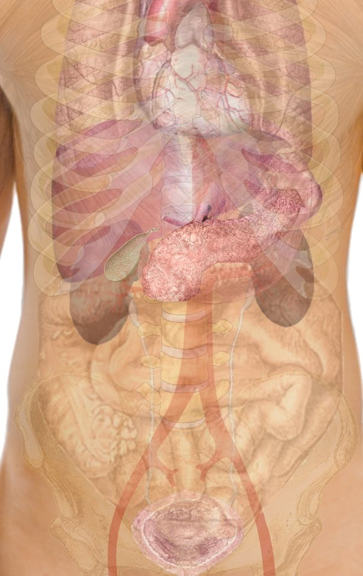
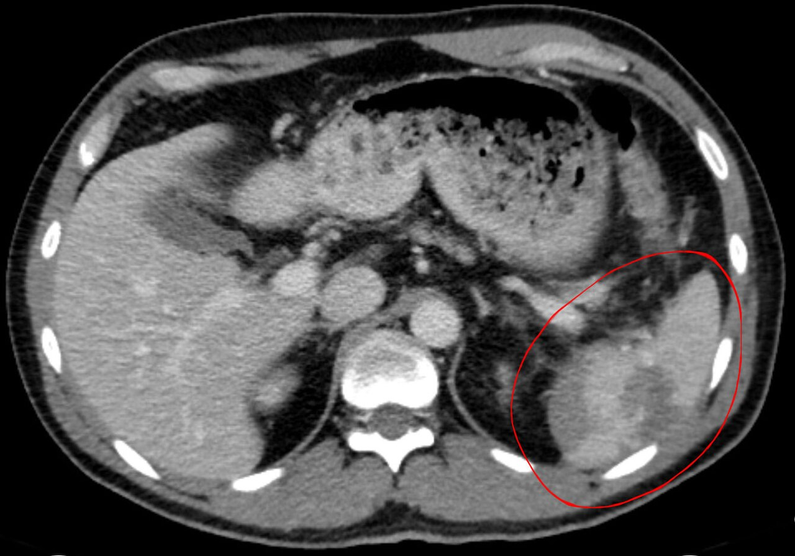
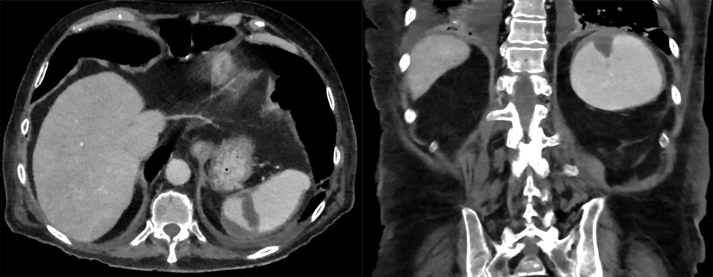
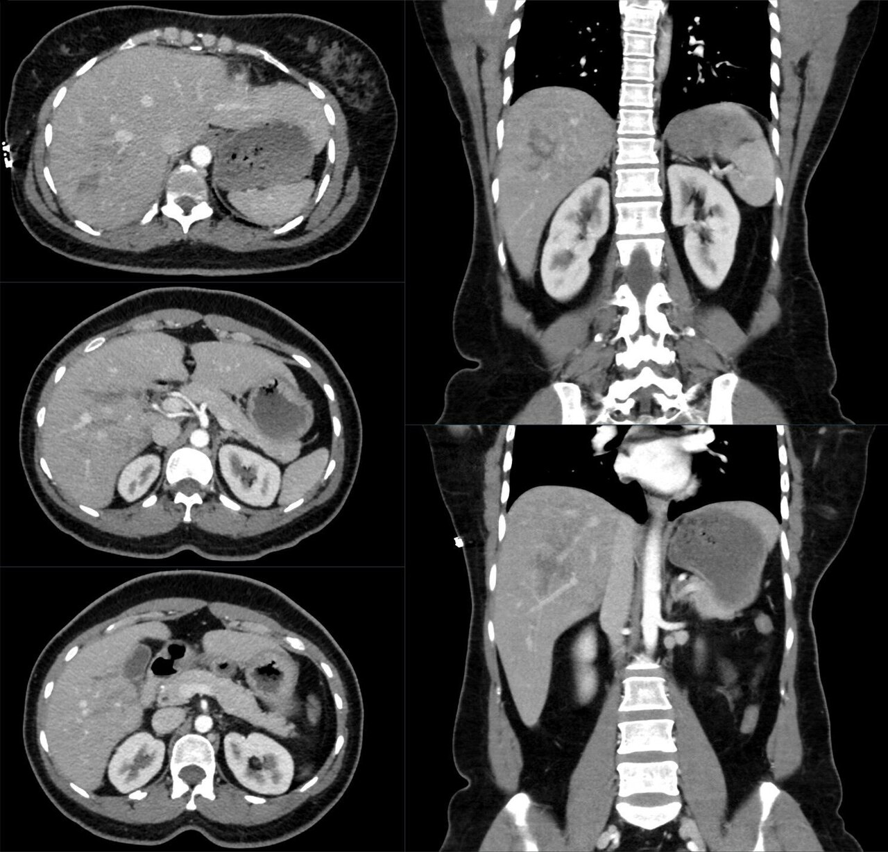

חבלת בטן קהה
FAST, CT וההחלטה: מתי ניתוח, מתי צנתור ומתי השגחה. spleen, liver, מעי, duodenum ו-pancreas
בסוף המפגש תדעו
- להסביר איך כוח קהה פוגע באיברים מוצקים, באיברים חלולים ובאיברים שב-retroperitoneum
- לבדוק בטן של פצוע ולזהות סימנים מחשידים, כמו סימן חגורת הבטיחות
- להכיר את ארבעת החלונות של FAST ואת המגבלות שלו
- להחליט בין ניתוח, CT, צנתור והשגחה לפי המצב ההמודינמי
- להכיר את הדירוג והטיפול בפגיעות spleen ו-liver ולחשוד בפגיעה במעי, ב-duodenum וב-pancreas
איך כוח קהה פוגע
הבטן בסקר השניוני
- הסתכלות: בטן תפוחה, שטפי דם, פצעים ובמיוחד סימן חגורת בטיחות אחרי תאונת דרכים
- מישוש: מחפשים פריטוניטיס או רגישות ממוקדת ומבדילים בין כאב בדופן לבין פגיעה בתוך הבטן
- אגן: שטפי דם ונפיחות. perineum: המטומה ב-scrotum ודם ב-urethral meatus (פגיעה ב-urethra)
- גב: גלגול גוש ובדיקה רקטלית לפי הצורך
- מגבלה: duodenum, pancreas ו-ascending colon ו-descending colon נמצאים ב-retroperitoneum. גם נקב מלא יכול להיות בלי סימני צפק
- סימן חגורה או רגישות בבדיקה, יחד עם ממצא חשוד ב-CT, מעלים את החשד לפגיעה במעי

ארבעה חלונות, שתי דקות, ליד המיטה

👆 לחצו על חלון בציור כדי לקרוא עליו
מחפשים נוזל סביב הלב. בטראומה נוזל כזה הוא דם וחושבים על טמפונדה
החלון שבו רואים הכי הרבה פעמים דם בבטן: פס שחור בין ה-liver ל-right kidney. תמיד מחליקים גם לקצה התחתון של ה-liver, שם מופיעה כמות קטנה ראשונה
החלון לדם מה-spleen. נמצא גבוה ואחורי מאחורי הצלעות ולכן קשה יותר לראות אותו
הנקודה הנמוכה של הבטן בשכיבה (pouch of Douglas באישה). קל יותר לראות כשה-bladder מלא
בדיקת FAST ושטיפת צפק
- חיובי: נוזל חופשי בבטן. בטראומה מניחים שזה דם
- בדיקה חיובית עם חוסר יציבות (לא מגיב, או מגיב זמנית להחייאה): ניתוח בטן
- מגבלות: תלוי בבודק, קשה בהשמנה, באמפיזמה תת-עורית ובגזים במעי. לא רואה את ה-retroperitoneum
- שטיפת צפק (DPL) כשאין אולטרסאונד: שאיבת דם או מרה = חיובי. אחרת מכניסים ליטר נוזל ובודקים: יותר מ-100,000 כדוריות אדומות או יותר מ-500 לבנות במ״ל = חיובי
- היום כמעט לא עושים שטיפה. גם בשאיבה בלבד, תוכן מעי, מרה או יותר מ-10 מ״ל דם מחייבים ניתוח

הפיזיולוגיה מחליטה, לא ה-CT
קוראים את ה-spleen ב-CT
- מצלמים בשני שלבים: עורקי וורידי פורטלי, כדי לראות את הזילוח של האיברים המוצקים
- קרע: קו או אזור כהה ולא סדיר ברקמה. סביבו המטומה ודם חופשי בבטן
- דימום פעיל: "כתם" לבן של חומר ניגוד שיוצא מכלי הדם, לתוך הבטן או לתוך פסאודואנוריזמה
- המטומה תת-קופסית: אוסף בצורת סהר שלוחץ על ה-spleen מבחוץ
- ה-CT מדויק מאוד ל-spleen (רגישות וסגוליות 96–100%), אבל חלש הרבה יותר למעי, ל-duodenum ול-diaphragm


spleen ו-liver: דרגה 1 עד 5
ברוב המקרים ה-spleen נשמר
- יציב עם דליפה או פסאודואנוריזמה ב-CT: צנתור ותסחיף
- דרגות 3–5 בלי דליפה: CTA או צנתור אחרי 24–96 שעות. דרגות גבוהות מאושפזות בטיפול נמרץ
- אין גורם סיכון (גיל, דרגה, כמות דם) שמנבא מי ייכשל ולכן לא מנתחים "ליתר ביטחון"
- לא יציב או נכשל: splenectomy מחתך באמצע
גם ב-liver: קודם השגחה
- יציב, בכל דרגה: טיפול בלי ניתוח הוא הבחירה הראשונה. רוב דרגות 1–3 מצליחות בלי ניתוח, שני שלישים מדרגות 4 ו-5 צריכים ניתוח
- דימום או פסאודואנוריזמה ב-CT: לשקול צנתור, אחרי שיחה בין הכירורג לרדיולוג. תסחיף "של הכול" גורם לנמק ולמורסות
- כישלון: בכ-9.5%. מנבאים: הלם וסימני צפק בהגעה, פציעה קשה ופגיעות נוספות בבטן
- סיבוכים גם בהצלחה (12–14%): בילומה, המוביליה ומורסה. ניקוז מלעורי, ERCP עם תומכן, או צנתור
- בניתוח: ריפוד סביב ה-liver, Pringle (חסימת ה-hepatoduodenal ligament) ופגיעה ליד ה-IVC שלא מדממת: מרפדים ולא חוקרים

הפגיעה שה-CT מפספס
- סימנים ב-CT: עיבוי דופן המעי, הסננה בשומן סביב, פגם ב-mesentery ונוזל חופשי בלי פגיעה באיבר מוצק
- נוזל חופשי שאין לו הסבר מחייב מחשבה: לעיתים קרובות זה דם מקרע ב-mesentery, אבל ייתכן שיש פגיעה במעי
- אוויר חופשי לבד בחבלה קהה הוא לא סימן אמין
- מי שלא נותח: בדיקות בטן חוזרות, כדי לזהות רגישות שמחמירה או סימני צפק
- במטופל בלי הלם, לפרוסקופיה היא חלופה בטוחה לפתיחת הבטן
- חשד גבוה? מחליטים מהר. התמותה עולה ככל שהניתוח מתעכב
duodenum ו-pancreas: חושבים עליהם
- מכה ב-epigastrium בחפץ צר: הגה ובילדים כידון אופניים
- ב-CT: דופן מעובה, אוויר ונוזל סביב. אם יש ספק: CT עם חומר ניגוד דרך הפה או שיקוף
- כל סימן לנקב: ניתוח מיד
- המטומה בדופן: לרוב נספגת. אם חוסמת: זונדה, הזנה תוך-ורידית ובדיקת ניגוד אחרי 5–7 ימים. עדיין חסום אחרי כ-14 יום: ניתוח
- גוף ה-pancreas נמעך בין ההגה או החגורה לעמוד השדרה
- ה-CT מפספס כ-15%. רגישות לפגיעה ברקמה 47–79% ולפגיעה ב-pancreatic duct 52–54%
- עמילאז שנלקח יותר מ-3 שעות אחרי הפגיעה עוזר מעט: רגיש אבל לא סגולי
- חשד לפגיעה ב-pancreatic duct: ERCP או MRCP. פגיעה ב-main pancreatic duct מטופלת בניתוח
מה שונה בחבלה קהה
שבר באגן עם הלם
- צילום אגן מהר בכל מטופל לא יציב. כל שבר יכול לדמם
- שבר "ספר פתוח": חגורת אגן או סדין בגובה ה-greater trochanters וקושרים את הרגליים יחד
- החגורה עוצרת בעיקר דימום ורידי. ממשיך להיות לא יציב: חושבים על מקור עורקי, צנתור ותסחיף
- חלופות: ריפוד מחוץ ל-peritoneum בתוך האגן ובמרכזים מסוימים REBOA
המטומה ב-retroperitoneum בניתוח
מחקרים שכדאי להכיר
12,930 מטופלים. בהשוואה ל-splenectomy, תסחיף (סיכון למוות 0.62) והשגחה (0.61) היו קשורים לפחות תמותה ולפחות סיבוכים. גם בלחץ דם נמוך בהגעה התוצאות לא היו גרועות יותר. כישלון של טיפול בלי ניתוח היה קשור ליותר סיבוכים
Huang W et al. JAMA Surg 2026;161(4):413-232,341 פגיעות ב-liver ו-2,143 פגיעות ב-spleen שטופלו בלי ניתוח. ב-CT החוזר נמצאו סיבוכים ב-7.1% ובכ-7.5% ורובם בתוך 48–72 שעות. ההמלצה: CT מתוכנן ב-liver דרגה 4–5 וב-spleen דרגה 3–5, גם בלי תסמינים
Perea LL et al. Ann Surg 2025;282(4):580-91נקודה לכל אחד: לויקוציטים 17,000 ומעלה, רגישות בבטן, ממצא קשה ב-CT ב-mesentery. 313 מטופלים, 38% נזקקו לניתוח. ציון 2 ומעלה: פי 10 סיכוי לניתוח, רגישות 72% וסגוליות 78%
Wandling M et al. Injury 2022;53(1):122-8חמישה דברים לקחת למחלקה
- לא יציב עם FAST חיובי או עם פריטוניטיס: לחדר ניתוח. יציב: CT
- בדיקת FAST בודקת ארבעה חלונות ואפשר לחזור עליה, אבל היא לא רואה את ה-retroperitoneum
- רוב פגיעות ה-spleen וה-liver במטופל יציב מטופלות בלי ניתוח: השגחה, צנתור לפי הצורך ומעקב אחרי סיבוכים
- ה-CT מפספס פגיעות במעי, ב-duodenum וב-pancreas. סימן חגורה ונוזל בלי הסבר מחייבים בדיקות חוזרות או ניתוח
- שבר באגן עם הלם: חגורת אגן מיד ואז צנתור או ריפוד